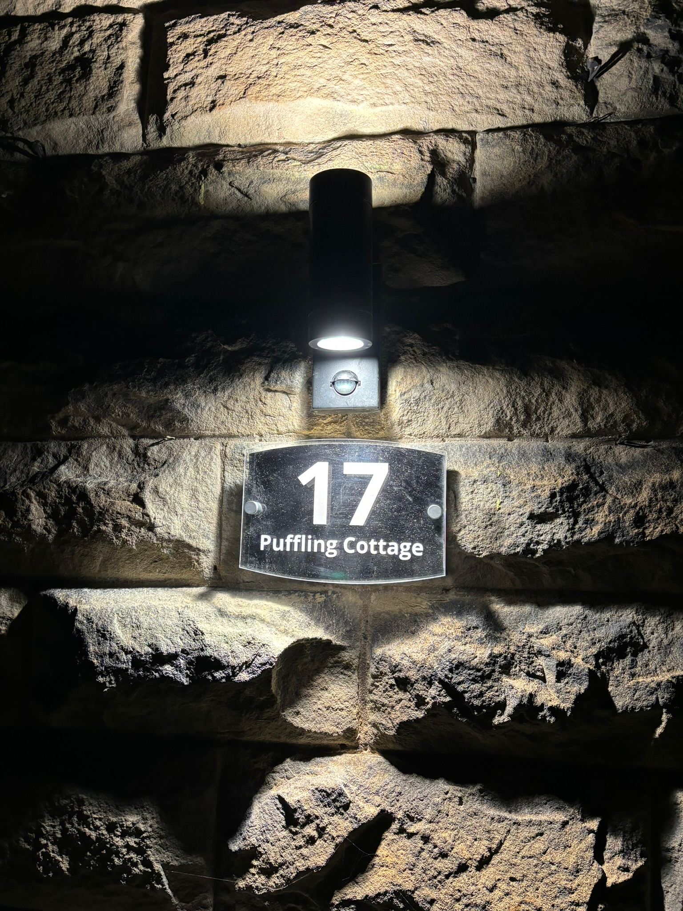
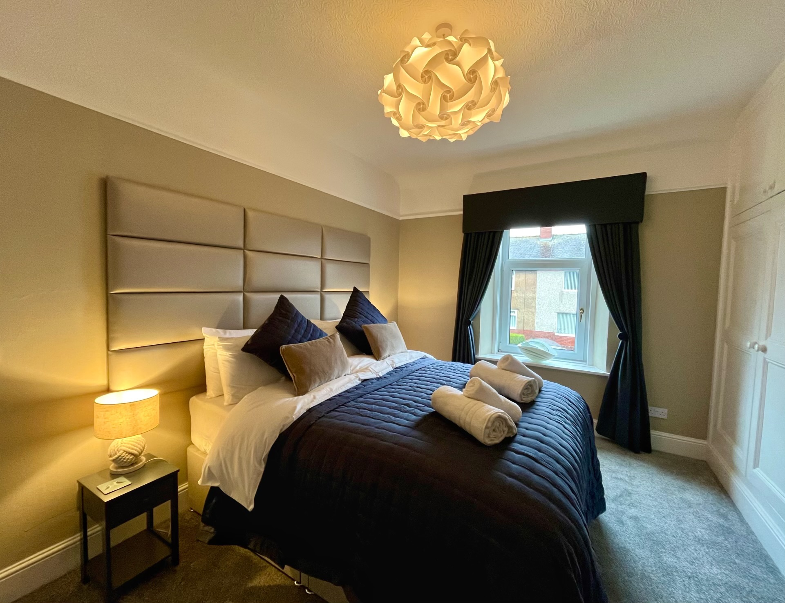
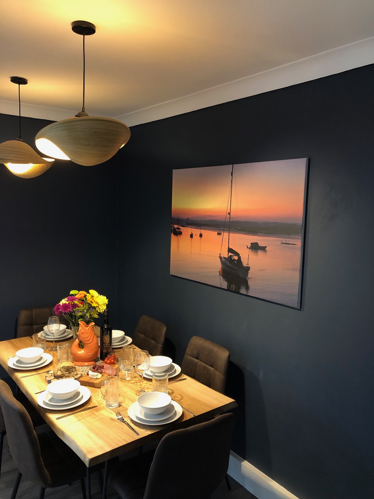
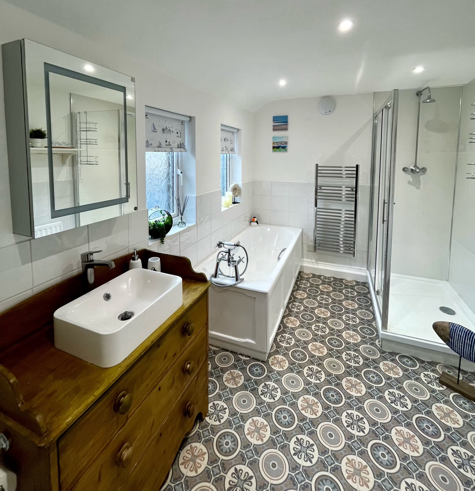
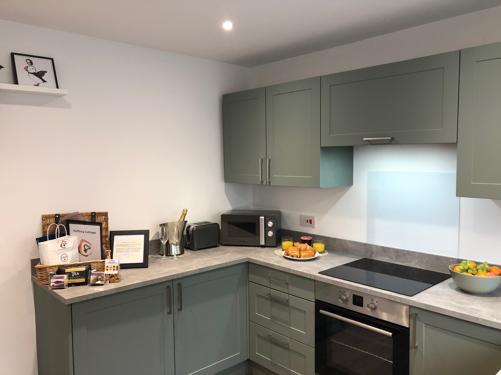

We named our cottage after the adorable puffins (& their babies!) that nest & breed on nearby Coquet Island each spring and summer. A 'puffling' is a baby puffin, and we thought the name perfectly captured the charm and warmth we wanted our guests to feel when staying here.
Puffling Cottage has been lovingly renovated and decorated to offer guests the perfect blend of traditional character and modern comfort. Whether you're here to explore Northumberland's stunning castles, walk the beautiful coastline, or simply relax and unwind, we hope our cottage becomes your home away from home.
We take great pride in maintaining the cottage to the highest standards and are always here to help make your stay as enjoyable as possible.
We are a family of 4 with 2 energetic cocker spaniels and we fell in love with the big blue skies and immense golden, sandy beaches of Northumberland in 2020. We have now realised our dream by acquiring this charming cottage so that we can spend more time in the area.
Enjoy this NEW website & please enquire if it inspires you to visit and we could soon be wishing you a fabulous holiday with us!
Robin & Sophia
Puffling Cottage is a beautifully presented two-bedroom property, ideally located for exploring the Northumberland coast.





Nestled in the heart of Amble-by-the-Sea, a stone's throw away from picturesque beaches and within a short stroll of the main street with its wide variety of local stores & supermarkets plus a range of fantastic restaurants, bars and the unique shopping experience in the "pods" at Amble Harbour Village, Puffling Cottage is perfectly situated for a Northumberland coastal break.
You will step from your car on the quiet street directly into the newly renovated "coastal-inspired" front garden & sun-trap with lovely seating for enjoying the beautiful afternoon sunshine (we provide a range of extra cushions in the well-stock utility room).
As you step into our cottage & through to the inviting living area, you'll be greeted by a plush chaise sofa bed providing king-sized sleeping space for two extra guests if needed. Relax in front of the Smart TV or cosy up by the luxurious, over-sized modern electric fire after a day of seaside adventures. We provide a library of books and games too.
The open-plan kitchen and dining area beckon, complete with seating for six at the locally-crafted and ethically-sourced Northumberland Ash "live edge" table and a range of modern amenities including a dishwasher, oven, electric hob, fridge/freezer, microwave, air-fryer and coffee machine.
Venture just two steps down into the enclosed, sheltered garden, where you'll find a delightful sitting area, perfect for gathering around the fire pit for an evening toasting marshmallows or making use of the barbecue for those al fresco dining opportunities. A hose is conveniently provided to ensure easy clean-up of sandy paws from your furry friends returning from the many nearby beach walks.
Adjacent to the dining area, step into the utility room, equipped with a washer/dryer, extra cushions for the seating in the front & back gardens. There are various amenities for canine guests (bed, towel, crate etc) & family trips to the beach (windbreak, mallet, seating etc); all for your convenience.
Upstairs, discover two beautifully appointed bedrooms. The master bedroom boasts a luxurious king-sized zip and link bed & blackout window dressings, offering both flexibility & tranquillity for your sleeping arrangements.
The second bedroom features a thoughtfully designed bunk bed, ideal for your own "little pufflings".
The spacious family bathroom is a haven of relaxation, featuring a rejuvenating bath and a separate double shower. Warm towels await on either the heated towel rail or the separate radiator, ensuring your comfort after a refreshing seaside soak.
Throughout the property, thoughtful décor choices reflect the cottage's seaside setting, with whimsical puffin and puffling motifs, canvas prints of nearby coastal scenes by a local photographer and stunning shell light fittings, evoking the tranquil beauty of the nearby coastline. We have tried to think of every detail for our home away from home.
We provide a welcome hamper on arrival, detailed information about the local area, and are always available to answer questions or help with anything you need during your stay.
Whether you're seeking a family beach getaway or a romantic coastal retreat, Puffling Cottage provides the perfect base for your adventures. Book your stay today and immerse yourself in the beauty of Northumberland's stunning coast, now designated as a 'National Landscape.'
Thank you for your interest, if you have any questions please send us an enquiry and we will respond almost immediately
We understand that dogs are part of the family, which is why Puffling Cottage welcomes well-behaved four-legged guests. We provide everything your dog needs for a comfortable stay.
The cottage includes dog beds, food and water bowls, towels for muddy paws, and poo bags. The secure garden is perfect for dogs to stretch their legs, and the beach is just a 5-minute walk away – paradise for water-loving pups!
We allow up to two dogs, and there's no additional charge for bringing your furry companions.

Puffling Cottage is ideally located in Amble-By-The-Sea, just a short walk from the harbour, shops, and beaches.
Short minute walk to beautiful sandy beaches with rock pools to explore at low tide. Northumberland coasts AONB has over 40 miles of amazing beaches and dunes systems.
5-minute walk to Amble harbour & it's shopping pods & departure point for Coquet Islands boat trips; to see puffins, roseate turns, seals & possibly dolphins too!
The main shopping street is a 2-minute walk away, with more great shops at the Amble Harbour Village pods.
5-minute drive to beautiful Warkworth Castle. Plenty of other castles on the coast & inland make Northumberland the county with most castles across England!
Puffling Cottage is part of the Rumah Homes portfolio, a property company dedicated to providing quality holiday accommodation.
We're passionate about creating memorable holiday experiences. Every detail at Puffling Cottage has been carefully considered to ensure our guests have everything they need for a comfortable and enjoyable stay.
We provide a welcome hamper on arrival, detailed information about the local area, and are always available to answer questions or help with anything you need during your stay.
For enquiries, please email us at rumahhomesltd@gmail.com